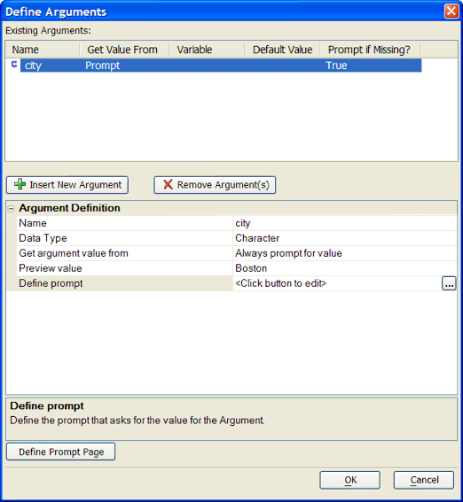
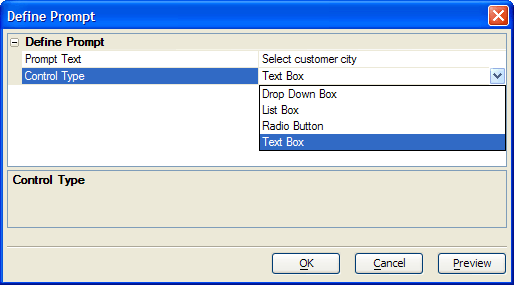
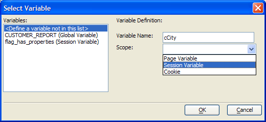

Define Arguments Dialog - Grid Components
Arguments provide run-time values for use in the filter and order expressions of grid components. To create an argument:
Click
 Insert New Argument.
Insert New Argument.Enter the name of the argument into the Argument Definition > Name field.
Select the data type of the argument in the Argument Definition > Data Type list. The options are:
"Character"
"Data"
"Logical"
"Numeric"
Define the type of source of the argument's value in the Argument Definition > Get argument value from list. The options are:
"Always prompt for value" - continue with Define Prompt Dialog
"Get value from variable" - continue with Getting the Argument from a Variable
Click
Insert New Argument to create the
argument.Optionally, repeat this procedure to create another argument.
Click OK to save your inputs or Cancel to discard your inputs when you have completed defining arguments.
Getting the Value from a Variable
Enter the name of the variable in the Variabl e > Variable list or click
 to display the ((|#Select_Variable_Dialog|Select Variable)) dialog.
to display the ((|#Select_Variable_Dialog|Select Variable)) dialog.Optionally, if, when the variable is not found, you want to prompt the user for a value at run time:
Check the Variable > Prompt for value if variable not found control.
Click
in the Argument Definition > Define
prompt control to display the <span class=Screen>Define Prompt Dialog</span>.Optionally, enter a default value for the variable in the Variable > Default value control.
Click OK to continue.

Enter the text that should appear to the left of the input control in the Define Prompt > Prompt text control.
Select the type of control to use in the Define Prompt > Control Type list. The options are:
"Drop Down Box"
"List Box"
"Radio Button"
"Text Box"
If you selected "List Box" in step 2, enter the number of lines to display in the list box in the Define Prompt > Size control. The value 0 means to display as many lines are there are choices.
If you selected "Drop Down Box", "List Box", or "Radio Button" in step 2, click
in the Define Prompt >
Choices control to display the Enter List of
Choices dialog. Enter the list of choices to display and click
OK.Click OK to return to the Define Arguments dialog. Picture
{kind=link}

Optionally, select an existing variable from the Variables list and click OK.

If you wish to create a new variable:
Select "
" from the Variables list. Enter the new variable's name in the Variable Name control.
Select the variable's scope from the Scope list. The options are:
"Page Variable"
"Session Variable"
"Cookie"
Click OK to return to the Define Arguments dialog.
See Also
Define an Alpha Five Table Query, Define an Alpha Five View Query
Supported By
Alpha Five Version 8 Professional Edition and Above